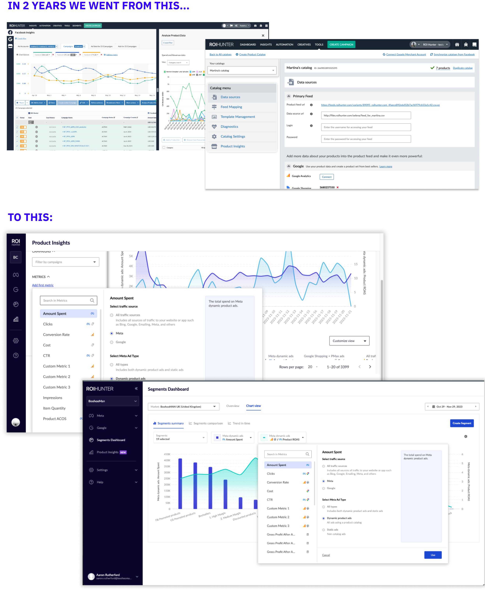
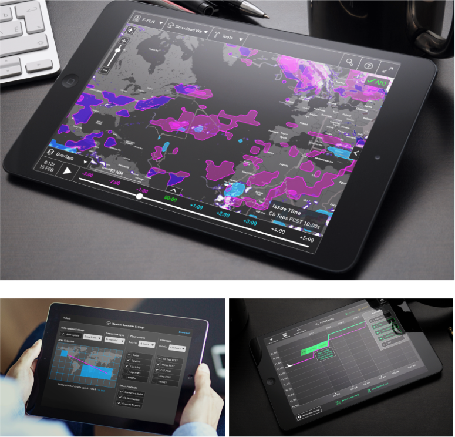

🧠My life's mission:
Create Simple, Useful, Human products from the Complex Technology.
Hi there! 👋
I’m an ambitious product design guy living in the EU with a proven track record of delivering products with outstanding customer experiences.
In my 11 years of experience, I’ve designed a lot of user experiences. I also love to help set up good work processes in which collaboration between creator roles and management flows well.
I’m really into three things at the moment – product design, artificial intelligence and security/privacy.
Head of Design – ROI Hunter 2021 – present
Senior UX Designer – Avast 2019 – 2021
UX Designer – Avast 2020 – 2021
Lead UX Designer – Kontent.AI 2016 – 2020
Senior UX Designer – Honeywell Aerospace 2015 – 2016
UI Team Lead – FNZ Ltd. 2013 – 2015
Avast – UX Designer
@ Privacy Team, Discovery team
Avast Smart VPN, Avast Privacy extension, Discovery projects on proving value before user renews subscription
In Avast, I worked as a Senior UX Designer on several privacy products. I was part of a complex Antitrack redesign, which needed a complete overhaul from legacy IA, UX and UI design into a smooth Avast style, as a result of a product acquisition by Avast. 
I also collaborated on a variety of iOS apps – Breachguard, Antitrack, VPN and others.
Smart VPN was a new cutting-edge feature that used machine learning to predict when a user wants to be protected, without needing to manually switch the VPN on/off.
Trouble was, we had no idea if this concept will work or not.
UX team was tasked with designing this feature and then validating as soon as possible, if it’s actually beneficial to the user.
ROI Hunter – Head of design
Information architecture & UI redesign
Adoption OKR owner – designed new onboarding feature, data migration flow, self-service features
Head of Design – OKR coaching, designer team growth,
establishing research process in the company
When I started at ROI Hunter, it was a company that just hired its first designer.
My goal was to establish UX practice in a company.
Our business objectives were clear – redesign the product as a modern, confident B2B tool that users like using and drive adoption of new features that the company was cross-selling.

One project I’d love to highlight from ROI Hunter was work on PMM & Design driven OKR – Smooth customer journey to adoption.
The problem was very low customer activation.
Along with the PMM team, I worked with 2 developer teams to ship two crucial new features, which were able to boost % of customers with the latest features from 4% to 60% of our customers.
Kontent.AI – Lead UX DEsigner
UX & UI complete app redesign with the new brand
Redesign of information architecture
AI Image recognition feature, discovery, prototyping
During my 5 years of working at Kontent.AI, I had a chance to touch a variety of different projects. What I consider most impactful was leading a big redesign of product UX & UI, along with redesigning its information architecture.
I also loved cooperating more on key business activities, like heading a customer journey mapping project of how do customers pick their new CMS.
After 3 months of research and validation, we presented the results to the business dept, which allowed the company to get all our content strategy on the same page.
Honeywell aerospace weather
senior ux designer
Field testing with airline pilots
Human Factors design & rigorous airline HMI standards
Responsible for the design of whole product experience
While working for a major aeronautics software company, I designed two groundbreaking aircraft apps targeted to airline pilots.Â
The app is extremely successful and is currently used by big global brands like Emirates.


What aerospace taught me:
I learned a lot about how does an aircraft software and hardware work, what's the difference between the American, Chinese and Russian airspace standards and what's the day in a life of an aircraft crew like. Another great perk of this project was working with actual aircraft pilots, which we regularly consulted, user tested and validated our ideas. Usability testing in a simulated cockpit conditions was really something to remember. I had a chance to explore the topics that were really unique like how to abstract weather patterns or help the pilot prepare for the flight hours ahead.
